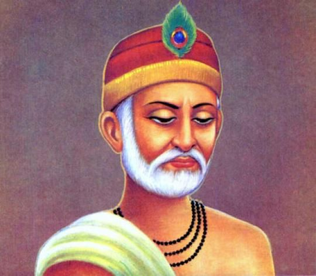
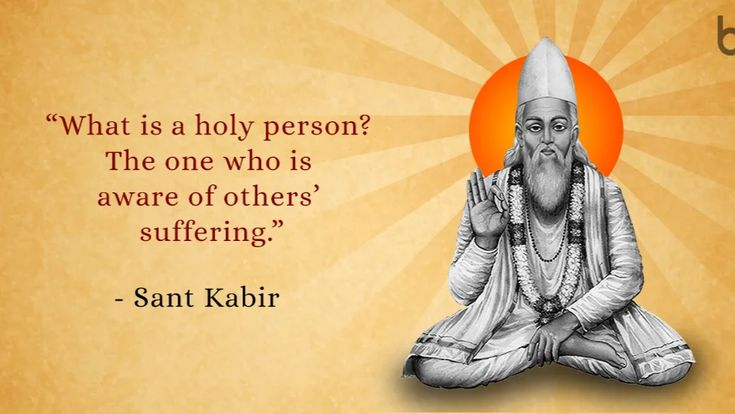

Who Was Kabir?
Kabir, also known as Kabir Das, was one of the most influential poet-saints and religious thinkers in the history of North Indian literature and spirituality. Traditionally associated with the Bhakti tradition, Kabir is remembered for powerful and accessible verses that challenged religious hypocrisy, social divisions, empty ritual, and excessive attachment to outward forms of religious identity.
Kabir's poetry focuses strongly on the search for the divine within human experience. His verses frequently emphasize direct spiritual realization, devotion, self-examination, and the importance of the inner life. Rather than presenting spiritual truth as something limited to religious institutions, external symbols, or formal rituals, Kabir repeatedly directs attention toward personal transformation and the direct experience of the divine.
A central feature of Kabir's thought is his criticism of religious formalism. He addressed practices and attitudes associated with both Hindu and Muslim religious communities, particularly when outward observance was separated from genuine ethical or spiritual understanding. His criticism was therefore directed not simply against one religious tradition but against hypocrisy, pride, and the belief that external identity alone guarantees spiritual truth.
Kabir is often associated with the idea of a formless or transcendent divine reality, frequently described through the language of nirguna bhakti. However, his poetry uses diverse religious vocabulary and cannot always be reduced to a single systematic philosophical doctrine. His verses draw upon the religious and cultural languages of his environment while repeatedly emphasizing the limitations of conceptual labels in the search for ultimate truth.
His poetry also addresses questions of social division and human equality. Kabir frequently criticized pride based on caste, status, religious identity, and inherited social position. His verses emphasize the shared human condition and question whether external distinctions have any ultimate spiritual value. This critical voice contributed significantly to his enduring influence among diverse communities.
Kabir's historical biography is difficult to reconstruct with certainty. Many detailed stories about his birth, teachers, travels, religious encounters, and death were preserved through later traditions, and different communities have remembered him in different ways. For this reason, it is important to distinguish between historically verifiable information and the rich hagiographical traditions that developed around his life.
His poetry, however, has had an exceptionally broad and lasting influence across religious, philosophical, musical, and literary traditions in South Asia. Verses attributed to Kabir have been transmitted through oral performance, manuscripts, and later collections, sometimes in different versions. His continuing importance lies not only in his religious influence but also in the remarkable power of his poetry to address questions of identity, devotion, truth, social inequality, and the search for meaning.
Kabir: Quick Facts
- Name — Kabir, also known as Kabir Das
- Period — Traditionally associated with the 15th-century North Indian Bhakti tradition
- Region — North India
- Known for — Poetry, devotional teachings, spiritual criticism, and religious thought
- Tradition — Commonly associated with the Nirguna Bhakti tradition
- Major themes — God, devotion, inner realization, religious criticism, equality, and the limitations of ritualism
- Literary form — Short devotional and philosophical verses, including dohas and related poetic forms
- Language — His poetry is associated with vernacular North Indian linguistic traditions
- Influence — Bhakti traditions, Sikh scripture, North Indian devotional literature, and modern Indian thought
Kabir's Historical Context and the Bhakti Movement

Kabir is generally placed in the fifteenth century, a period of significant religious, cultural, and intellectual activity in North India. However, the exact dates and many details of his life remain historically uncertain. The period in which he is generally situated included diverse Hindu and Islamic traditions, devotional communities, and changing forms of religious and literary expression.
Kabir lived in a broader environment in which devotional movements were developing across different regions of India. These traditions are often grouped under the broad term Bhakti, which refers to religious paths emphasizing devotion and a personal relationship with the divine. However, the Bhakti traditions were highly diverse and should not be understood as a single movement with one doctrine or one social program.
Bhakti poets and teachers expressed their ideas in many different regional languages rather than exclusively through the classical language of Sanskrit. This development helped devotional poetry reach wider audiences and allowed religious ideas to circulate through singing, recitation, oral performance, and local literary traditions. Kabir's poetry belongs to this wider world of vernacular religious and devotional expression.
Kabir is particularly associated with traditions often described as Nirguna Bhakti. In this broad context, the divine is frequently understood as exceeding ordinary material form and limited human representation. Kabir's poetry nevertheless uses many different names and images for the divine, demonstrating that devotional language could be used while also questioning whether any single form or category could completely contain ultimate reality.
The religious environment of North India also involved sustained contact between communities associated with different traditions. Kabir's poetry draws upon vocabularies familiar within both Hindu and Islamic cultural worlds. This does not mean that he simply attempted to combine two religions, but it does demonstrate that his poetic language developed within a diverse environment of religious interaction and exchange.
Kabir's Life and Biography
Reliable historical information about Kabir's life is limited, and many details remain uncertain. He is traditionally associated with Varanasi, one of the major religious and cultural centers of North India, and with a community of weavers. His traditional identity as a weaver is significant because images of weaving and ordinary labor frequently appear in the cultural world through which Kabir's poetry has been understood and transmitted.
Kabir is generally placed by modern scholarship in the fifteenth century, although the exact dates of his birth and death are disputed. Different religious and literary traditions provide different chronological accounts, making it difficult to establish a complete biography with certainty. Historians therefore distinguish between a broad historical reconstruction of Kabir and the much richer body of traditional stories that developed around his name.
Traditional accounts contain numerous stories about Kabir's birth, family, religious identity, teachers, travels, and encounters with important religious figures. One influential tradition connects him with Ramananda, while other accounts emphasize Kabir's independence from established religious authorities. Such narratives are important for understanding how later communities interpreted Kabir, but they should not automatically be treated as independently established historical facts.
Later traditions also describe Kabir as engaging in disputes and encounters with religious authorities and political rulers. These stories often emphasize his refusal to accept religious hypocrisy, social pride, or unquestioned authority. Although such accounts reflect themes strongly associated with Kabir's poetry, the precise historical details of many individual episodes are difficult to verify from contemporary evidence.
Kabir's traditional biography also became important to different religious communities that preserved his memory in distinct ways. Hindu, Muslim, Sikh, and Kabir Panthi traditions have all contributed to the transmission and interpretation of material associated with him. As a result, there is no single uncomplicated traditional biography that can be separated easily from the later religious communities that remembered and reshaped his legacy.
For this reason, Kabir is often best understood historically through the surviving and transmitted corpus of poetry associated with his name, together with the history of its preservation and interpretation. Even the textual tradition is complex, since his verses circulated orally and appear in different collections and versions. This makes Kabir not only a historical figure but also a major example of how poetry, oral tradition, religious memory, and literary transmission can shape the legacy of a thinker across centuries.
Kabir's Philosophy and Teachings
Kabir's thought centers on the possibility of a direct relationship with the divine. Rather than making spiritual truth dependent solely upon religious institutions, inherited identity, or outward ritual, his verses repeatedly direct attention toward inner awareness, devotion, remembrance of the divine, and transformation of the individual. For Kabir, spiritual life involves more than belonging to a particular community or performing externally recognized practices.
A major theme in Kabir's poetry is the criticism of religious formalism. He questions the value of rituals, symbols, pilgrimages, and other external practices when they are performed without genuine understanding or inner transformation. His criticism is directed toward attitudes associated with more than one religious community, making his poetry a powerful challenge to hypocrisy and superficial claims of spiritual superiority.
Kabir also emphasizes the importance of seeking the divine within human experience itself. His poetry frequently challenges the assumption that ultimate truth must be found only in distant sacred places or external religious objects. Instead, the search for truth is presented as requiring self-examination and an awakening to a reality that is already intimately connected with human existence.
Many interpretations associate Kabir with nirguna bhakti, a form of devotion directed toward a divine reality understood as beyond ordinary physical form and limited description. However, Kabir's language is diverse and draws upon multiple religious vocabularies. He uses names and concepts familiar from different traditions while repeatedly suggesting that no single outward label can fully contain or define the ultimate reality sought by the spiritual individual.
His poetry frequently uses ordinary language, paradox, metaphor, criticism, and vivid imagery to question assumptions about religion and spiritual authority. Instead of presenting abstract arguments in the style of a formal philosophical treatise, Kabir often communicates through short and memorable verses. A paradox or striking image can force the listener to reconsider familiar assumptions about the self, the world, religious identity, and the nature of truth.
Kabir's teachings also contain a powerful critique of social pride and division. His verses question distinctions based on caste, inherited status, and religious identity when these become sources of arrogance or separation. Although Kabir should not be reduced to a modern political category, his poetry repeatedly challenges the idea that social position or external identity determines a person's spiritual worth.
Kabir's thought is therefore difficult to reduce to a single, systematic philosophical doctrine. His verses belong primarily to a devotional and poetic tradition rather than presenting a systematic philosophical treatise comparable to the works of classical philosophers. Nevertheless, his poetry raises profound philosophical questions about reality, language, identity, knowledge, religious authority, social distinction, and the possibility of direct spiritual experience.
The enduring power of Kabir's teachings lies partly in this combination of devotion, criticism, and philosophical questioning. His poetry does not simply provide answers for the reader to accept; it often unsettles conventional thinking and demands personal reflection. Through this approach, Kabir became one of the most influential voices in the intellectual, religious, and literary history of South Asia.
Kabir and Nirguna Bhakti
Kabir is commonly associated with Nirguna Bhakti, a broad current of devotional thought that emphasizes the divine as beyond ordinary material form, fixed representation, and limited human description. The Sanskrit term nirguna is often understood in contrast with saguna, referring broadly to approaches that understand the divine through qualities, forms, and personal manifestations.
In Kabir's poetry, however, the divine cannot easily be reduced to a single philosophical definition. His verses employ a rich variety of names and images drawn from the religious languages of North India. He may speak of Ram, Hari, Allah, or other terms, while repeatedly challenging the assumption that the ultimate divine reality belongs exclusively to one religious community or tradition.
Kabir's association with Nirguna Bhakti is particularly evident in his criticism of attempts to confine the divine within a particular image, temple, mosque, ritual, scripture, or institution. His poetry questions whether external religious practices have genuine spiritual value when they are separated from inner awareness, devotion, and personal transformation. The criticism is directed toward religious formalism rather than simply toward one specific religious tradition.
This does not mean that Kabir rejects all religious language or devotional expression. On the contrary, his poetry depends heavily upon devotional vocabulary, metaphor, and imagery. The important point is that the words used to speak about the divine should not be mistaken for a complete possession or definition of the divine itself. Religious language can point toward truth without exhausting its meaning.
This tension is central to Kabir's poetry: language is necessary for speaking about the divine, yet the divine exceeds the limits of ordinary language and conceptual categories. Kabir often uses paradoxical expressions and striking images precisely because conventional descriptions may encourage people to believe that they have fully understood what cannot be reduced to an ordinary object of knowledge.
Nirguna devotion also supports Kabir's criticism of excessive attachment to external identity. If the divine is not confined to a particular visible form or social group, then religious status and outward membership cannot by themselves guarantee spiritual realization. Kabir repeatedly redirects attention from public displays of religiosity toward the transformation of the individual and the direct search for truth.
For this reason, Kabir's Nirguna Bhakti should not be understood merely as an abstract metaphysical theory about a formless God. It is also connected with a particular way of approaching spiritual life—one that emphasizes devotion, remembrance, inner awareness, and freedom from pride in external religious distinctions. His poetry combines these themes in ways that have allowed different communities to interpret his teachings through their own religious and philosophical traditions.
What Did Kabir Believe About God?
Kabir's poetry emphasizes the unity, immediacy, and transcendence of the divine. The divine is presented as intimately connected with human existence while also exceeding ordinary attempts to define, classify, or represent it. Kabir's concern is therefore not simply to provide a theological description of God but to challenge the seeker to recognize the limits of external religious identity and conceptual certainty.
He frequently uses names such as Ram, Hari, and other devotional vocabulary familiar within the religious culture of North India. However, Kabir's use of terms such as Ram should not always be interpreted through a narrowly sectarian framework or assumed to refer only to one specific theological conception. In many verses, divine names function as ways of directing attention toward the ultimate reality sought through devotion.
Kabir also draws upon vocabulary associated with Islamic traditions, reflecting the diverse religious environment in which his poetry developed and was transmitted. His use of different religious languages has made him an important figure for discussions about the relationship between Hindu and Muslim devotional cultures in North India. At the same time, scholars and readers differ over how precisely his religious identity and theological position should be defined.
The divine in Kabir's poetry is often presented as beyond ordinary distinctions and external religious labels. He repeatedly questions disputes in which people claim exclusive possession of truth simply because they belong to a particular community. For Kabir, arguing about the name of God is of limited value if the individual has not undergone genuine inner transformation.
Kabir frequently emphasizes the possibility of encountering the divine within human experience rather than searching only in distant places or external objects. This does not mean that every verse can be reduced to a simple doctrine that God is physically located inside the individual. Rather, his poetry repeatedly directs the seeker inward, encouraging self-examination and the recognition that spiritual truth cannot be found merely through outward movement from one sacred place or ritual to another.
His understanding of the divine is closely connected with devotion. Knowledge alone, particularly when understood as intellectual information or religious argument, is not sufficient for the transformation Kabir seeks. His poetry repeatedly values direct realization, loving remembrance, and an inward relationship with the divine over religious pride or the accumulation of external signs of piety.
This is one reason Kabir became such an important figure for traditions that emphasize direct spiritual experience over religious formalism. His verses do not simply ask which religious community possesses the correct identity; they ask whether the individual has genuinely encountered the truth that religious language attempts to express. This question gives Kabir's poetry much of its continuing philosophical and spiritual power.
At the same time, Kabir's thought should not be presented as a perfectly systematic theology. His teachings survive primarily through poetry transmitted across complex textual and oral traditions, and individual verses can use different metaphors and perspectives. His understanding of God is therefore best approached through recurring themes—divine unity, transcendence, devotion, inner realization, and criticism of religious exclusivity—rather than by forcing every verse into a single rigid philosophical formula.
Kabir's Views on Religion and Religious Ritual

One of the most recognizable features of Kabir's poetry is its criticism of religious formalism. He repeatedly challenges the idea that performing an outward religious practice automatically produces spiritual knowledge or brings a person closer to the divine. Ritual, pilgrimage, religious dress, and public displays of devotion can become spiritually empty when they are performed without genuine understanding or inner transformation.
Kabir's criticism was directed toward religious behavior more broadly rather than simply toward one community. His verses question forms of Hindu and Muslim religious practice when they become mechanical, superficial, or disconnected from genuine devotion. This criticism of both traditions is one reason Kabir is often remembered as a figure who challenged rigid religious boundaries and claims of exclusive spiritual authority.
His poetry frequently questions whether an external act has value if the individual's mind and conduct remain unchanged. A person may visit sacred places, recite religious words, observe ceremonies, or display visible signs of religious belonging while continuing to be dominated by pride, anger, greed, or hostility. Kabir repeatedly directs attention toward this gap between outward religious appearance and inward spiritual condition.
Kabir's position should not, however, be simplified into the claim that he merely rejected all religion or every form of religious practice. His own poetry is deeply shaped by devotional language and religious concepts. Rather than arguing that spiritual life requires no tradition whatsoever, his verses repeatedly challenge the assumption that external observance alone is sufficient for spiritual realization.
His criticism is also connected with his understanding of the divine as something that cannot be confined to a single institution, building, image, or religious community. If ultimate reality exceeds ordinary human categories, then no group can claim complete possession of it merely through membership or ritual. This idea allows Kabir to criticize religious exclusivity while continuing to employ the devotional vocabulary of different traditions.
Kabir's goal was therefore not simply to reject religion but to redirect attention toward inner transformation, devotion, and direct awareness of the divine. Religious practices become meaningful, from this perspective, when they are connected with genuine self-examination and spiritual change. His poetry consequently asks the seeker not only what religious practice is being performed, but also what transformation has actually taken place within the person.
Kabir on Inner Spiritual Realization
Kabir repeatedly turns the seeker's attention toward inner spiritual realization. For him, knowledge of the divine cannot be obtained merely through external appearances, inherited social identity, pilgrimage, or the performance of ritual. His poetry encourages the individual to examine the self and to recognize that the search for ultimate truth involves a transformation of one's own awareness.
This inward emphasis does not necessarily mean withdrawing completely from the world or rejecting ordinary life. Kabir's poetry often uses images from everyday experience, work, relationships, and ordinary human activity. These images suggest that the spiritual search is not limited to isolated religious spaces but concerns the way the individual understands and lives within the world.
Kabir frequently associates spiritual failure with the persistence of ego, attachment, pride, and ignorance. A person may possess religious knowledge or social status and still fail to understand the deeper reality toward which religious teachings point. Inner realization therefore requires more than intellectual learning; it involves confronting the attitudes and attachments that prevent genuine spiritual understanding.
His poetry also emphasizes the limitations of merely conceptual knowledge. Words, doctrines, and philosophical arguments can help direct the seeker toward truth, but they can also become substitutes for direct understanding. Kabir's use of paradox often exposes this problem by forcing the reader or listener beyond familiar intellectual categories and encouraging a more personal engagement with the questions raised by spiritual life.
The emphasis on inward realization is closely connected with Kabir's devotional thought. The seeker is encouraged not merely to think about the divine but to cultivate a genuine relationship with it through remembrance, devotion, and personal transformation. This makes Kabir's approach difficult to classify as purely philosophical or purely emotional, since his poetry combines reflection, criticism, devotion, and spiritual practice.
This emphasis on direct experience is one of the central reasons Kabir remains important in discussions of Indian mysticism and devotional literature. His verses repeatedly raise the question of whether a person has genuinely encountered the truth they claim to believe. Through this challenge, Kabir shifts attention away from religious reputation and toward the individual's own search for understanding and realization.
Kabir on Caste, Social Division and Equality
Kabir's poetry repeatedly questions social and religious distinctions based on inherited identity. Rather than treating birth, caste, occupation, or membership in a particular religious community as proof of spiritual superiority, his verses direct attention toward the moral and spiritual condition of the individual. This critical approach is one of the most important social dimensions associated with Kabir's enduring legacy.
His criticism is particularly directed against pride in outward status. Kabir challenges the assumption that a person's inherited position automatically determines greater purity, wisdom, or closeness to the divine. If ultimate reality is available through genuine realization and devotion, then external social distinctions cannot by themselves establish a person's spiritual worth.
Kabir also questions divisions created by competing religious identities. His poetry frequently criticizes those who claim exclusive possession of truth while failing to recognize common human limitations. By drawing upon vocabulary associated with different religious traditions, Kabir challenges rigid boundaries and asks whether disputes over identity distract people from the deeper search for truth.
These themes have made Kabir an important figure in later discussions of caste, social equality, religious identity, and social reform in India. Different modern readers and movements have interpreted his poetry in relation to their own struggles against hierarchy and exclusion. His verses continue to provide powerful language for questioning whether inherited status should determine a person's dignity or spiritual value.
At the same time, Kabir's criticism should be understood within the historical context of medieval North India rather than simply projecting modern political categories onto him. Kabir did not write a systematic modern theory of social equality, citizenship, or political rights. His criticism emerged primarily through devotional and poetic language concerned with spiritual pride, human conduct, and the search for the divine.
Nevertheless, his rejection of spiritual superiority based solely on outward identity has contributed significantly to his modern reputation as a critic of social hierarchy. Kabir's poetry repeatedly asks the reader to look beyond inherited labels and examine the actual condition of the individual. In this sense, his spiritual teaching carries important implications for how human dignity and worth are understood.
Kabir's continuing influence comes partly from this combination of spiritual and social criticism. His challenge to caste pride, religious exclusivity, and inherited status is connected with his larger belief that outward distinctions can obscure a deeper truth about human existence. By shifting attention from social labels to inner realization and ethical transformation, his poetry continues to speak to questions of equality and human identity across different historical periods.
Kabir's Dohas and Famous Verses
Kabir is especially famous for short poetic compositions commonly known as dohas. These compact verses are associated with a traditional poetic form built around concise and memorable expression. Verses attributed to Kabir address themes such as devotion, self-knowledge, ego, religious hypocrisy, mortality, attachment, and the search for spiritual realization.
The popularity of Kabir's short verses comes partly from their ability to communicate complex ideas through ordinary language and familiar images. Rather than relying exclusively on abstract philosophical terminology, his poetry often draws attention to everyday experiences. Images from work, relationships, nature, travel, and domestic life make spiritual questions accessible to listeners from different social and cultural backgrounds.
Many verses associated with Kabir are memorable because they combine simplicity with intellectual and spiritual depth. A short statement may criticize pride, question an established religious practice, or use an ordinary image to suggest a deeper truth about human existence. This compact form also made such verses particularly suitable for oral transmission and performance.
Kabir's dohas frequently challenge the reader to examine the difference between external appearance and inner reality. A person may possess religious learning, perform rituals, or hold an important social position while remaining dominated by ego or ignorance. Through brief and striking expressions, Kabir repeatedly asks whether genuine transformation has taken place beneath these outward signs.
His verses also address the temporary nature of human life. Themes of mortality and impermanence encourage the individual to reconsider excessive attachment to wealth, status, possessions, and social reputation. Such reflections are closely connected with Kabir's larger concern that human beings often become absorbed in temporary concerns while neglecting the search for deeper spiritual understanding.
However, not every verse commonly attributed to Kabir can be assumed to have been preserved exactly as he originally composed it. His poetry circulated extensively through oral transmission, manuscripts, and different community traditions. Over time, verses could be remembered, adapted, collected, or attributed in different forms, making the reconstruction of an original and complete corpus historically complex.
For this reason, famous verses associated with Kabir should sometimes be approached with caution regarding exact wording and authorship. Different collections may preserve related verses in different versions, and the popularity of Kabir's name has contributed to the attribution of additional material to him. Nevertheless, the enormous circulation of these verses demonstrates the enduring cultural and literary influence of the poetic tradition associated with Kabir.
Kabir's Poetry and Literary Style
Kabir's poetry is notable for its direct, energetic, and often confrontational style. He frequently addresses the listener or reader in a manner that challenges accepted assumptions and exposes contradictions between religious claims and actual human conduct. This directness gives many of his verses an unusual sense of urgency and continues to make them powerful in oral performance.
His imagery is often drawn from ordinary life, including weaving, households, agriculture, nature, work, trade, travel, and human relationships. These familiar images allow Kabir to connect spiritual and philosophical questions with experiences recognizable in everyday life. Rather than separating the sacred completely from ordinary existence, his poetry frequently finds spiritual significance within the world of daily human activity.
Kabir's association with weaving is especially important to the imagery surrounding his poetic tradition. Images of threads, cloth, weaving, and craftsmanship can become ways of thinking about the body, human life, relationships, and the connection between the individual and the divine. Such imagery demonstrates how ordinary material experience can be used to communicate ideas that would otherwise appear highly abstract.
His language can also be deliberately paradoxical. Kabir sometimes places apparently contradictory ideas together in order to disrupt habitual ways of thinking. A paradox can force the listener to pause and reconsider assumptions about the self, knowledge, God, and reality rather than accepting familiar religious or intellectual formulas without reflection.
Another important feature of Kabir's style is his use of criticism and satire. His poetry can be sharply critical of religious hypocrisy, social pride, and false claims to spiritual authority. Yet this criticism is generally connected with a larger concern for genuine realization, since Kabir repeatedly contrasts outward religious display with the inner transformation required for a meaningful spiritual life.
Kabir's poetry also resists easy classification into a single literary or religious language. His compositions belong to a complex North Indian linguistic environment, and their transmission across regions and communities has contributed to variation in language and textual form. Later collections and performers have preserved Kabir's poetry through different linguistic traditions, making the history of his literary corpus especially complex.
This combination of simplicity, metaphor, paradox, criticism, and spiritual intensity helped Kabir's poetry travel across linguistic and religious communities. His verses could be sung, recited, remembered, and adapted without requiring access to formal philosophical education. At the same time, their apparent simplicity often conceals difficult questions about identity, religious authority, language, and the nature of spiritual knowledge.
Kabir and the Guru Granth Sahib
Kabir's compositions occupy an important place in the Guru Granth Sahib, the central scripture of Sikh tradition. The text includes compositions attributed not only to Sikh Gurus but also to a number of devotional figures whose teachings were regarded as spiritually significant. Kabir is among the most prominent of these non-Sikh contributors represented within the scripture.
The inclusion of Kabir's compositions demonstrates the wide historical circulation and influence of his poetry within the devotional culture of North India. His verses addressed themes that also held importance for Sikh religious thought, including devotion to the divine, criticism of empty ritual, the dangers of ego and pride, and the importance of genuine inner realization.
The presence of Kabir's compositions in the Guru Granth Sahib also provides an important example of how religious and literary traditions interacted across community boundaries. Kabir's poetry was not confined to one narrowly defined group but circulated through a wider world of devotional teachers, singers, communities, and textual traditions. Different religious groups could therefore preserve and interpret his verses in their own distinctive contexts.
Kabir should not, however, be described simply as a Sikh philosopher. He is generally placed in the fifteenth century, before Sikhism developed into the distinct religious tradition known through its later historical development. His compositions were subsequently preserved within Sikh scripture and became an important part of the Guru Granth Sahib's broader collection of devotional poetry.
This distinction is historically important because Kabir's legacy extends across several religious and cultural traditions. He has been remembered and interpreted by Sikh communities, Kabir Panthis, Hindu devotional traditions, Muslim communities, literary scholars, musicians, and other readers. No single later community completely defines the historical or intellectual meaning of Kabir.
The transmission of Kabir's compositions also illustrates a broader problem in the study of his work: textual preservation and attribution are complex. Verses associated with Kabir circulated orally and in different written collections, and scholars must compare traditions when studying the history of particular compositions. The textual form in which a verse appears in one collection may therefore differ from versions preserved elsewhere.
Nevertheless, Kabir's place in the Guru Granth Sahib remains a major part of his historical legacy. It demonstrates the extraordinary reach of his poetry beyond the immediate circumstances of his own life and shows how his teachings became integrated into one of the most important religious and literary traditions of South Asia.
Kabir Between Hindu and Muslim Traditions
Kabir's poetry frequently draws upon vocabulary associated with both Hindu and Muslim religious traditions. His verses may invoke names such as Ram, Hari, Allah, or Khuda, alongside concepts and images familiar to different devotional communities. This diverse language reflects the religious and cultural environment of North India in which Kabir's poetry developed and was later transmitted.
The use of different religious vocabularies does not necessarily mean that Kabir attempted to construct a simple compromise between Hinduism and Islam. His poetry can be sharply critical of religious practices and claims associated with both traditions, particularly when outward identity, ritual, or institutional authority becomes more important than genuine devotion and spiritual realization.
Kabir repeatedly challenges the assumption that the divine belongs exclusively to a particular religious community. Arguments about names, sacred places, external symbols, and inherited identity may become obstacles when they produce pride and hostility rather than deeper understanding. His poetry therefore directs attention away from exclusive claims and toward the individual's own relationship with the divine.
This makes Kabir particularly important for understanding the religiously diverse intellectual environment of medieval North India. Different religious traditions existed in close proximity and interacted through trade, politics, devotional practice, language, and intellectual exchange. Kabir's poetry emerged from this complex environment rather than from an isolated philosophical or religious tradition.
Kabir's association with Nirguna Bhakti is also relevant to this question. His poetry frequently presents the divine as exceeding ordinary physical forms and limited descriptions. If ultimate reality cannot be fully confined within a particular image, institution, or human category, then rigid claims to exclusive possession of the divine become difficult to sustain.
At the same time, Kabir's religious identity is historically difficult to define with complete precision. Later Hindu, Muslim, Sikh, and Kabir Panthi traditions preserved and interpreted his life and poetry in different ways. These traditions often emphasize different aspects of Kabir's teachings, making it necessary to distinguish between the historical figure and the later communities that shaped his religious legacy.
His poetry is therefore often interpreted as emphasizing a reality beyond rigid religious boundaries, although this interpretation should not erase the specific religious languages through which Kabir expressed his ideas. Rather than abandoning religious language altogether, he used diverse vocabularies while questioning whether names, labels, and external identities could fully capture the truth toward which spiritual life is directed.
Kabir's continuing importance lies partly in this ability to speak across different traditions without being easily contained by any one of them. His verses have allowed diverse communities to find meaning in his poetry while also preserving a powerful criticism of religious exclusivity, spiritual pride, and the tendency to mistake outward identity for genuine realization.
Kabir's Main Philosophical and Spiritual Ideas
Kabir did not present his thought as a single systematic philosophical doctrine comparable to a formal treatise. His ideas are expressed primarily through poetry, metaphor, devotional language, paradox, and criticism. Nevertheless, recurring themes throughout the poetic tradition associated with him reveal a distinctive approach to questions concerning the divine, the self, religious authority, social identity, and spiritual realization.
The ideas below should therefore be understood as major recurring themes rather than as a rigid philosophical system defined by Kabir himself. His poetry often approaches the same questions from different perspectives and uses vivid images instead of formal definitions. This flexibility is one reason his teachings have been interpreted differently by later religious, literary, and philosophical traditions.
Direct Experience of the Divine
Kabir repeatedly emphasizes the importance of direct spiritual realization. Knowledge of the divine cannot be obtained merely by inheriting a religious identity, memorizing sacred teachings, or accepting the authority of others without personal understanding. His poetry directs the seeker toward an immediate and transformative engagement with the reality that religious language attempts to describe.
This emphasis does not mean that Kabir simply rejects all teachers, traditions, or religious language. Rather, he questions the belief that external authority alone can produce realization. Spiritual understanding must become something personally meaningful, affecting the individual's awareness, conduct, and relationship with the divine rather than remaining only a matter of public identity.
Criticism of Religious Formalism
Kabir challenges religious practices when they become empty outward performances disconnected from inner transformation. A person may perform rituals, visit sacred places, wear religious symbols, or speak extensively about spiritual matters while remaining dominated by pride, greed, anger, or attachment.
His criticism is directed toward a fundamental contradiction between appearance and reality. Kabir repeatedly asks whether religious behavior has produced genuine transformation or merely created the appearance of devotion. In this sense, his criticism is not simply a rejection of ritual itself but a challenge to the assumption that outward practice automatically guarantees spiritual knowledge.
Unity Beyond Religious Division
Kabir repeatedly questions rigid distinctions between religious communities and directs attention toward a divine reality that cannot easily be reduced to a single human label. His use of vocabulary associated with different traditions demonstrates that the search for truth can employ multiple religious languages without requiring absolute separation between them.
At the same time, Kabir's thought should not be simplified into the claim that all religious traditions are identical in every respect. His poetry instead challenges the pride and exclusivity that can arise when individuals believe that their own external identity gives them complete possession of spiritual truth. The deeper question is whether religious identity has led to genuine understanding.
Inner Transformation
Spiritual progress in Kabir's poetry requires the individual to examine the self. The seeker must confront attitudes such as ego, pride, attachment, ignorance, and excessive concern with social recognition. Without such inner examination, external religious activity can become another source of self-importance rather than a path toward spiritual understanding.
Kabir's emphasis on transformation gives his poetry an important ethical dimension. The search for the divine is connected with the way a person lives, understands others, and responds to the limitations of the ego. Spiritual realization is therefore presented not simply as acquiring information but as a profound change in one's way of seeing and existing.
Devotion
Devotion is one of the central themes of Kabir's poetic tradition. His verses repeatedly emphasize remembrance of the divine, longing for spiritual realization, and the importance of a sincere inner relationship with ultimate reality. This devotional dimension prevents his thought from being understood as merely an abstract philosophical theory.
Kabir's devotional language often combines love, longing, criticism, and paradox. The relationship between the seeker and the divine may be described through powerful emotional images, yet the divine is also presented as exceeding ordinary forms and categories. This combination gives Kabir's poetry both an intensely personal and a deeply transcendent character.
Equality and the Criticism of Social Hierarchy
Kabir's poetry questions claims of spiritual superiority based on inherited social or religious status. Birth, caste, occupation, and outward membership in a particular community do not by themselves establish wisdom or closeness to the divine. His verses repeatedly direct attention away from social labels and toward the actual moral and spiritual condition of the individual.
This criticism contributed significantly to Kabir's later importance as a voice against social hierarchy. However, his ideas should also be understood within the historical context of medieval North India rather than simply translated into modern political language. Kabir did not formulate a modern theory of legal or political equality, but his challenge to pride based on inherited identity has given his poetry lasting significance in discussions of caste, dignity, and human equality.
Taken together, these ideas reveal the central direction of Kabir's teachings: a movement away from ego, external pride, mechanical ritual, and rigid identity toward devotion, self-examination, direct realization, and inner transformation. Although Kabir did not create a systematic philosophical school in the conventional sense, his poetry continues to raise profound questions about what it means to know the divine and live a genuinely meaningful spiritual life.
Why Is Kabir Important to Indian Philosophy?
Kabir is important to the history of Indian thought because his poetry raises profound questions about God, selfhood, religious knowledge, social identity, language, and the relationship between external practice and inner realization. Although he did not write a systematic philosophical treatise, his verses repeatedly examine problems that lie at the center of philosophical and religious reflection.
Kabir's approach differs significantly from the highly systematic Sanskrit philosophical traditions associated with thinkers such as Shankara or Ramanuja. Rather than presenting a carefully organized sequence of definitions, arguments, and technical concepts, Kabir expresses his ideas through vernacular poetry, metaphor, paradox, dialogue, and devotional experience. His philosophical importance must therefore be understood through the questions his poetry raises rather than through a formal philosophical system.
One important philosophical concern in Kabir's thought is the nature of ultimate reality. His association with Nirguna Bhakti and his repeated criticism of attempts to confine the divine within fixed forms raise questions about whether ultimate reality can be adequately represented through images, concepts, institutions, or language. His poetry frequently suggests that the divine exceeds the categories through which human beings attempt to describe it.
Kabir also raises important questions about knowledge and spiritual authority. How can a human being genuinely know the divine? Is knowledge obtained primarily through scripture, ritual, philosophical argument, a teacher, devotion, or direct realization? Kabir does not provide a single technical theory of knowledge, but his criticism of merely external learning repeatedly challenges the assumption that information alone is the same as genuine understanding.
Questions concerning the self and human identity are also central to his poetry. Kabir challenges individuals to look beyond inherited labels, social status, religious identity, and the pride associated with the ego. This raises a philosophical question found across many Indian traditions: what aspects of human identity are superficial and changing, and what constitutes a deeper or more meaningful understanding of the person?
His thought also connects philosophical inquiry with ethical and spiritual transformation. For Kabir, questions about truth cannot always be separated from the way an individual lives. Pride, attachment, hypocrisy, and hostility may prevent genuine understanding, while devotion and self-examination can transform the way a person approaches reality. Knowledge, in this sense, is connected not only with what a person thinks but also with the transformation of the individual.
Kabir is therefore important because he represents a different mode of philosophical expression within Indian intellectual history. His work demonstrates that profound reflection on reality, knowledge, identity, and liberation was not confined to formal scholastic treatises. Through poetry and devotional language, Kabir brought philosophical and spiritual questions into forms that could circulate widely beyond specialized intellectual institutions.
His enduring philosophical significance lies in the questions his poetry continues to ask: What is ultimate reality? How can human beings know the divine? What is the true basis of human identity? Can outward religious practice produce genuine transformation? And how should spiritual knowledge be distinguished from mere religious appearance? These questions connect Kabir's poetic tradition with some of the deepest concerns in the broader history of Indian philosophy.
What Do We Actually Know About Kabir?
Kabir's historical reputation is unusually difficult to separate from the later devotional traditions that preserved his memory. Information about his life comes from a combination of poetic collections, oral traditions, manuscripts, religious communities, and later biographical narratives. These sources are historically valuable, but they do not all provide the same level of evidence for reconstructing the life of the historical Kabir.
Kabir is generally placed by modern scholarship in the fifteenth century and is strongly associated with the religious and cultural world of North India. However, many precise details about his life remain uncertain. For this reason, it is important to distinguish between information supported by relatively early textual evidence and stories that became prominent through later devotional memory.
Relatively Well Established
- Kabir was an influential North Indian poet and religious thinker. His name became associated with a major body of devotional poetry that circulated widely across North India and beyond.
- His poetry is strongly associated with the Bhakti tradition. His verses repeatedly emphasize devotion, inner realization, criticism of religious formalism, and the search for a direct relationship with the divine.
- His poetry draws upon more than one religious vocabulary. Verses associated with Kabir employ terms and concepts familiar within both Hindu and Islamic cultural environments while questioning rigid religious divisions.
- Compositions attributed to Kabir are preserved in the Guru Granth Sahib. Their inclusion demonstrates the historical influence and wide circulation of Kabir's poetic tradition within North Indian devotional culture.
- Kabir's poetry has been transmitted through multiple textual and oral traditions. This wide transmission contributed to his extraordinary influence but also makes questions of exact wording and authorship historically complex.
Traditionally Reported
- Detailed stories concerning Kabir's birth and childhood. Different later traditions provide different accounts of his origins, family, and early life.
- Particular accounts of his relationship with religious teachers. One influential tradition connects Kabir with Ramananda, although the precise historical nature of this relationship is difficult to establish with certainty.
- Stories concerning encounters with rulers and religious authorities. These narratives often emphasize Kabir's criticism of religious hypocrisy and social pride, but the precise historical circumstances behind many individual stories remain difficult to verify.
- Detailed accounts of Kabir's travels and public debates. Such stories form an important part of later traditions surrounding his life, even when independent historical evidence for particular events is limited.
- Specific narratives concerning his death. Different communities preserve distinctive stories that reflect the later religious significance attached to Kabir and his legacy.
Historically Uncertain
- The exact dates of Kabir's birth and death. Different traditions and historical reconstructions have proposed different chronologies.
- The complete details of his early life and family background. Later accounts contain important traditions, but historians cannot independently establish every detail.
- Whether every poem attributed to Kabir was composed by the historical Kabir. His name became associated with a large and complex poetic tradition transmitted through different communities.
- The exact wording of many verses. Oral transmission and manuscript variation mean that related compositions may survive in different versions and collections.
- The precise historical circumstances behind many popular stories about his life. A narrative may express an important aspect of Kabir's later religious image without necessarily functioning as a straightforward historical record.
These uncertainties do not mean that nothing can be known about Kabir. Instead, they require a careful historical method. Scholars can study the textual traditions associated with his name, compare different collections, examine the historical context of North Indian devotional movements, and distinguish relatively early evidence from later hagiographical development.
Kabir is therefore best understood through two connected but distinct perspectives: the historical reconstruction of a fifteenth-century poet and religious thinker, and the much broader Kabir tradition created through centuries of poetry, performance, manuscript transmission, religious interpretation, and collective memory. Both are historically important, but they should not automatically be treated as the same thing.
Kabir's Influence and Legacy
Kabir became one of the most influential voices in the history of North Indian devotional literature. The poetry associated with his name continued to circulate widely long after his lifetime through oral performance, singing traditions, manuscripts, and later literary collections. This continuing transmission allowed Kabir's ideas to reach audiences across different regions, languages, and religious communities.
His influence can be seen particularly within traditions associated with Bhakti and with the communities that preserved and interpreted his poetry. Kabir Panthi traditions developed around his name and teachings, while other devotional communities incorporated his verses into their own religious and literary practices. His legacy therefore cannot be limited to a single institution or community.
Kabir's compositions preserved in the Guru Granth Sahib gave his poetry an especially important place within Sikh scripture. The inclusion of his verses demonstrates how his teachings became part of a wider North Indian devotional world in which poets, saints, singers, and religious communities interacted across different boundaries.
His influence has also been preserved through music and oral performance. Kabir's verses have long been sung and recited in different regional traditions, allowing his poetry to remain a living form of cultural expression rather than existing only in written literary collections. Performance has also contributed to the preservation, interpretation, and variation of verses associated with his name.
Kabir's legacy extends beyond religious devotion into the history of Indian literature and intellectual culture. Writers, scholars, translators, musicians, and philosophers have continued to study his use of metaphor, paradox, vernacular language, and social criticism. His poetry demonstrates the extraordinary capacity of literary expression to address questions that are simultaneously philosophical, ethical, spiritual, and social.
In modern India, Kabir is frequently remembered as a poet of spiritual freedom, religious criticism, inner realization, and social equality. Different modern movements and readers have interpreted his work in relation to their own concerns, including caste, communal division, religious tolerance, and individual freedom. These interpretations demonstrate the continuing relevance of his poetry, while also making it important to distinguish Kabir's historical context from later uses of his legacy.
Kabir's poetry has also gained an international audience through translation and modern scholarship. Translators face a difficult task because his verses often contain wordplay, regional linguistic features, religious vocabulary, and layered metaphors that do not always have exact equivalents in other languages. Different translations can therefore emphasize different aspects of the same poetic expression.
The enduring power of Kabir's legacy lies partly in the fact that his poetry continues to resist simple classification. He is remembered as a poet, saint, religious critic, devotional thinker, and influential voice in Indian intellectual history. Different communities have emphasized different aspects of his work, yet recurring themes—criticism of hypocrisy, devotion to the divine, inner transformation, and questioning of inherited identity—continue to connect these diverse interpretations.
More than five centuries after the period in which he is generally placed, Kabir's verses continue to be studied, translated, sung, performed, and debated. Their survival across such a long period demonstrates not only the historical influence of Kabir but also the continuing ability of his poetry to speak to fundamental questions about truth, identity, religion, and the meaning of human life.
Kabir Explained Simply
Kabir was a highly influential North Indian poet and spiritual thinker, generally associated with the fifteenth century. His verses challenged people to look beyond external religious identity and search for a deeper spiritual reality. Although many details of his life remain historically uncertain, the poetry associated with his name has had a lasting influence across South Asian religious and literary traditions.
Kabir repeatedly criticized empty ritual, religious hypocrisy, social pride, and rigid divisions between communities. He questioned the belief that a person becomes spiritually wise simply by performing religious ceremonies or publicly displaying a particular religious identity. For Kabir, outward practice had little value if it was not accompanied by sincerity, self-examination, and genuine inner transformation.
His poetry instead emphasizes devotion, inner realization, self-knowledge, and direct awareness of the divine. Kabir often suggests that the divine cannot be confined to a particular building, image, institution, or social group. The spiritual seeker must therefore look beyond superficial appearances and confront the ego, ignorance, and attachments that prevent deeper understanding.
Kabir expressed these ideas primarily through short and memorable poems rather than through a formal philosophical treatise. His language frequently uses images from ordinary life, paradoxes, and powerful criticism to make complex spiritual questions understandable to a wide audience. This poetic style helped his verses circulate across different regions and communities.
- Who was he? — An influential North Indian poet and religious thinker, generally associated with the fifteenth century and with the wider Bhakti tradition. His historical biography is uncertain, but his poetic influence is exceptionally well established.
- What is he famous for? — His devotional poetry, verses commonly known as dohas, spiritual teachings, and sharp criticism of religious formalism, hypocrisy, and excessive attachment to outward identity.
- What did he teach? — That genuine spiritual realization requires inner transformation rather than merely external religious practice. He repeatedly emphasizes sincerity, devotion, self-examination, and direct awareness of the divine.
- What tradition is he associated with? — Kabir is commonly associated with Nirguna Bhakti, a devotional tradition that emphasizes a divine reality beyond ordinary material forms and limited representations.
- What did he think about religion? — He used language from different religious traditions but criticized the idea that belonging to a particular community automatically gives a person spiritual superiority. His poetry repeatedly directs attention toward realization rather than religious pride.
- Why is he important? — His poetry crossed religious, linguistic, and social boundaries and became influential across several Indian traditions. His compositions were preserved through oral and manuscript traditions and some are included in the Guru Granth Sahib.
- What is his central message? — Do not mistake outward appearance for genuine understanding. Examine yourself, overcome ego and hypocrisy, cultivate sincere devotion, and search for a deeper awareness of the divine.
In simple terms, Kabir asked people to look within. He believed that arguments about religious labels, social status, and external practices could become meaningless when they were separated from genuine spiritual understanding. His continuing importance comes from his ability to express difficult questions about truth, identity, and the divine in direct and memorable poetry.
Kabir's Poetry and Spiritual Wisdom
The important theme running through Kabir's poetry is the search for the divine within lived human experience rather than dependence on outward religious identity alone.
Frequently Asked Questions About Kabir
Who was Kabir?
Kabir was an influential North Indian poet and religious thinker associated with the Bhakti tradition. His poetry emphasizes devotion, inner realization, and criticism of religious formalism.
What is Kabir famous for?
Kabir is famous for his devotional poetry, dohas, spiritual teachings, criticism of religious hypocrisy, and rejection of rigid social and religious divisions.
What did Kabir teach?
Kabir emphasized direct spiritual realization, devotion, inner transformation, and the limitations of external religious ritual when it is separated from genuine spiritual understanding.
What is Kabir's philosophy?
Kabir's thought is expressed primarily through poetry rather than a systematic philosophical treatise. Its major themes include devotion, the divine, inner realization, criticism of religious formalism, equality, and the rejection of rigid religious boundaries.
Was Kabir a Hindu or Muslim?
Kabir's religious identity is difficult to reduce to a simple modern category. His poetry draws on Hindu and Muslim religious vocabulary while strongly criticizing rigid religious divisions. Different communities have interpreted Kabir in different ways.
What is Nirguna Bhakti in Kabir's philosophy?
Nirguna Bhakti refers to devotion directed toward the divine understood as beyond ordinary material form. Kabir is commonly associated with this devotional approach.
What are Kabir's famous dohas?
Kabir is famous for short devotional and philosophical verses commonly called dohas. They address subjects such as self-knowledge, devotion, ego, religious hypocrisy, mortality, and spiritual realization.
Did Kabir's writings survive?
Kabir's poetry survived through oral, manuscript, and community traditions. Compositions attributed to Kabir are also preserved in the Guru Granth Sahib.
Is Kabir part of Sikhism?
Kabir lived before Sikhism developed as a distinct religious tradition, but compositions attributed to him are included in the Guru Granth Sahib and are important within Sikh scripture.
Why did Kabir criticize religious rituals?
Kabir criticized ritual when it became an outward performance without corresponding inner spiritual transformation. His poetry repeatedly redirects attention toward direct realization and devotion.
Why is Kabir important in Indian philosophy?
Kabir is important because his poetry explores enduring questions about God, the self, spiritual knowledge, religious identity, social equality, and the relationship between outward practice and inner realization.
Why is Kabir still important today?
Kabir remains relevant because his poetry questions religious intolerance, social divisions, empty formalism, and the assumption that spiritual truth belongs exclusively to one community.
Related Indian Philosophers and Thinkers
Kabir belongs to a broad intellectual history of Indian philosophy, devotional thought, mysticism, and religious criticism. Explore other Indian thinkers who developed different approaches to reality, devotion, knowledge, ethics, and spiritual liberation.
Philosophy Branches Connected to Kabir
Kabir's thought connects with philosophical questions concerning religion, spirituality, knowledge, ethics, the self, and the nature of ultimate reality.
Why Kabir Still Matters
Kabir remains one of the most recognizable voices in the history of Indian devotional literature. His poetry challenges readers to look beyond religious labels and external appearances toward inner transformation and direct spiritual understanding.
His criticism of religious formalism and social division has allowed his poetry to speak to very different communities across centuries. At the same time, the complexity of his historical biography reminds us to distinguish between Kabir's poetry and later stories about his life.
Kabir's enduring significance lies in the questions his poetry raises: What is genuine spiritual knowledge? Can the divine be confined to a religious label? And what happens when external religious identity becomes more important than inner realization?
Explore Great Philosophers